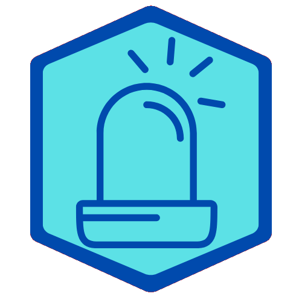

<ion-content [fullscreen]="true" class="background">
  <div class="nav-bar">
    

    <div><p></p></div>
    <div class="button-container">
      <ion-button
        (click)="logOut()"
        class="custom-button"
        color="dark"
        [disabled]="presionado"
      >
        <ion-icon name="log-out-outline"></ion-icon>
        Cerrar sesión
      </ion-button>
    </div>
  </div>

  <div class="alarm-container">
    <!-- Puedes usar un botón grande como el tuyo, pero centrado y con el nuevo diseño -->
    <button
      class="fullscreen-button"
      (click)="btnActivarODesactivar()"
      [ngStyle]="{
        'background-color': presionado ? '#72a6be' : '#72a6be',
        'color': '#eb445a'
      }"
    >
      <ion-icon [name]="presionado ? 'pause' : 'play-circle'"></ion-icon>
    </button>
    <!-- Si quieres mostrar el estado de la alarma visualmente -->
    <div class="alarm-status" *ngIf="presionado">
      <span>Alarma activada</span>
    </div>
    <div class="alarm-status" *ngIf="!presionado">
      <span>Alarma desactivada</span>
    </div>
  </div>
</ion-content>
